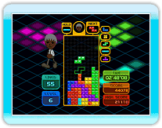

15 |
Un jugador |
 |

Tetris con reglas normales. Apila los Tetriminos según vayan viniendo y elimínalos. Cuando los bloques llegan hasta la parte de arriba por donde
 Tetris con reglas de batalla normales. Enfréntate a la máquina para ver quién hace más líneas. El primero que lleve al oponente a una situación sin salida (fin de juego), gana. Para enviar bloques de penalización al campo del oponente hay que hacer líneas. Hay 15 IAs, (niveles 1 a 15) y las victorias y las derrotas se guardan para cada una en los Récords individuales. Tetris con reglas de batalla normales. Enfréntate a la máquina para ver quién hace más líneas. El primero que lleve al oponente a una situación sin salida (fin de juego), gana. Para enviar bloques de penalización al campo del oponente hay que hacer líneas. Hay 15 IAs, (niveles 1 a 15) y las victorias y las derrotas se guardan para cada una en los Récords individuales.
 Lucha por la mejor
Lucha por la mejorpuntuación mientras ayudas al "escalador" a alcanzar la "zona de meta" en lo alto del campo. Tetriminos. No te olvides de pasar por todas las banderas "de control" que hay por el camino. La puntuación se basa en el tiempo total de 10 fases de juego. Cada vez que pases por un "punto de control", recibirás un "Patear línea".
 Coloca los Tetriminos de forma que rellenen la sombra que hay en el campo creando así una forma determinada. Coloca los Tetriminos de forma que rellenen la sombra que hay en el campo creando así una forma determinada. No importa el porcentaje de fase que hayas hecho. Para superarla sólo tienes que rellenar la sombra completamente. Lucha por los mejores tiempos y porcentajes de cada fase para conseguir la máxima puntuación. Sólo dispones de 3 minutos para cada fase.
Guía a un Tetrimino que cae por
|

 |
 |
 |